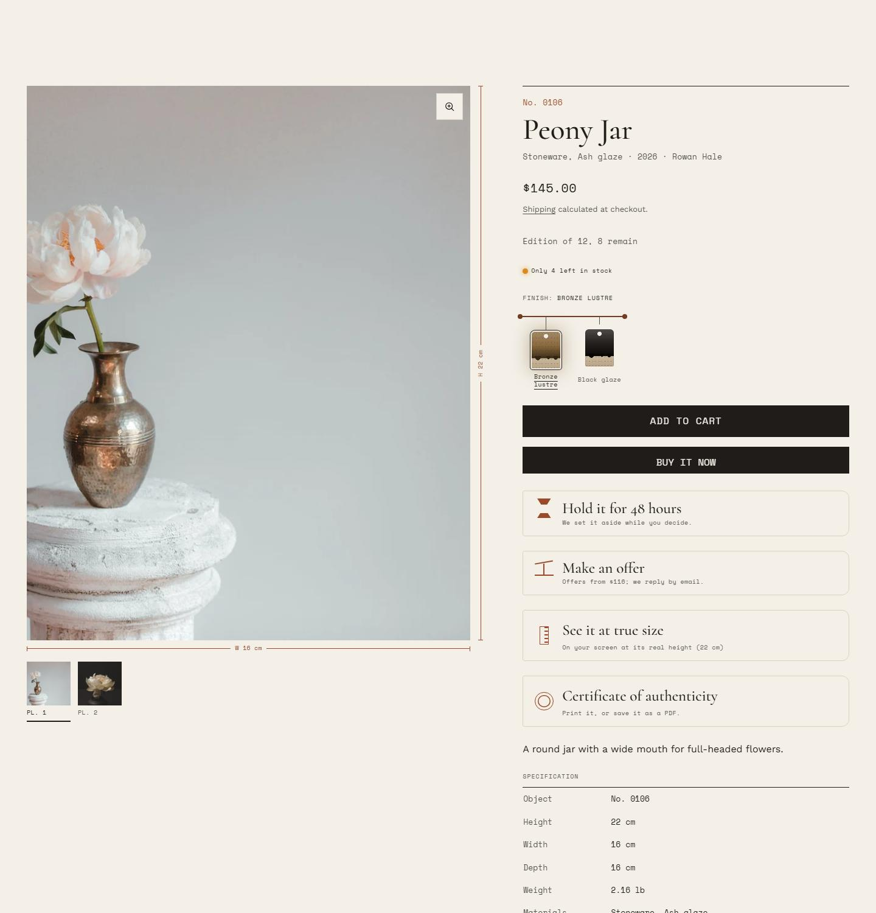

Introduction
What makes Atelier different
Most Shopify themes are built for stock: many units of the same thing, sold in sizes and colors. Atelier is built for the opposite, a studio where each piece is made once, has its own story and size, and matters after it sells.
The idea: every piece is a catalogued object
Atelier presents a shop the way a museum or a maker's studio catalogue presents a collection. Each product gets a catalogue number (No. 0142), its measurements drawn as technical dimension lines, its materials, year and maker on a wall label, and its edition stated plainly. Objects stand on a shelf at their relative heights, not in identical boxes. When a piece sells, it doesn't vanish: it's stamped, kept in the archive, and becomes a reason to commission the next one.

What it gives a maker's shop
| The problem with a general theme | What Atelier does |
|---|---|
| A one-of-a-kind piece looks like a stock item with a SKU | An object record: number, name, wall label, edition state, specification ledger and making log (The object record) |
| Sold pieces disappear, along with their photos and search traffic | A sold state and archive: sold objects are stamped, kept in the archive collection, and link to "Commission something similar" |
| Customers can't judge size from photos, so handmade goods get returned | Dimension lines on the photo, a scale drawing beside a familiar object and a true-size view calibrated to the screen |
| All products look the same height in a grid | The shelf: product photos stand at their relative real heights on a shared baseline, so a vase is taller than a cup |
| Releases happen in batches ("kiln openings") | A release record that names the next opening as a date, without a ticking countdown |
| Special pieces need a different way to sell | A sale room of sealed-bid lots, reserve a piece for 48 hours, and make an offer, all without an app |
| Commissions come through a generic contact form | A work order form with pieces, budgets and timing, linked from sold objects and the studio page |
| Handmade work ships slowly and needs care | Lead times per object and a packing list cart with parcel weight, handling and a dispatch date |
None of this needs an app. It runs on native Shopify metafields and metaobjects (see Product records), so it keeps working when you change apps and comes with you if you change theme.
A design you can recognise without the logo
Five things appear on every page, so the theme reads as Atelier even with someone else's photos:
- Object numbers, in a monospace "record" face with tabular figures, on cards, product pages, the cart and search.
- Dimension lines: thin technical-drawing lines with end ticks and a measurement (
H 18 cm). They're information on photos and the signature mark elsewhere. - The shelf: objects stand on a hairline baseline, without card borders.
- Wall labels: title, then material, year and maker, then a short note, like a museum label.
- Studio paper: an off-white card stock and a dark kiln ground, with hairline rules.
The type has three voices with one job each: a display serif for names and titles, a humanist sans for reading, and the record mono for numbers, measurements, prices and labels.
What it deliberately leaves out
- Slideshows and autoplay carousels. A maker's work is shown one object at a time.
- Countdown timers, urgency badges and "only 2 left" pressure. Scarcity is shown honestly, as an edition.
- Testimonial carousels and logo walls. These become an exhibition CV ("Exhibited / Featured").
- Bento grids, marquees, count-up stats and parallax columns. These are the trend patterns that make a theme look assembled rather than designed.
Sections you won't find in other themes
Every section was designed for Atelier; none are Shopify's default sections. A few that only make sense for makers:
- Kiln stage: the opening of the home page, a lit vitrine with the object measured in its frame.
- Kiln firing: the firing told as a temperature climbing to its peak as you scroll.
- Shelf: a series on a shelf at true relative scale.
- Glaze matcher: pick a glaze and see every object in it.
- Making log: the dated steps of making a piece.
- Sale room: lots with estimates, current bids and closing times.
- Archive: the pieces that have sold, kept on record.
- Catalogue spreads: series as the pages of a printed catalogue.
- Five film sections, each framing a video differently: an arch, a strip, a vitrine, a wheel and a window.
Built to the standard Shopify expects
- No default code. The engine, components, sections and styles are the theme's own.
- Every required feature: filters, quick view, predictive search, product recommendations and complementary products, pickup availability, subscriptions (selling plans), gift card recipients, unit pricing, volume pricing and quantity rules, accelerated checkout, rich media (3D, video), customer accounts, language and country selectors.
- Ten languages, including right-to-left Arabic, Hebrew and Urdu, with the store content translated in the demo.
- Accessible: built to WCAG 2.2 AA and checked with axe, usable by keyboard, with reduced motion respected and touch targets of at least 24 px.
- Fast: no framework, no jQuery, CSS and JavaScript loaded only by the sections that need them, and a size budget checked on every change.